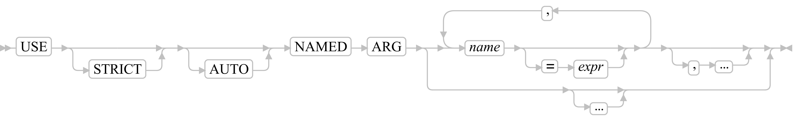
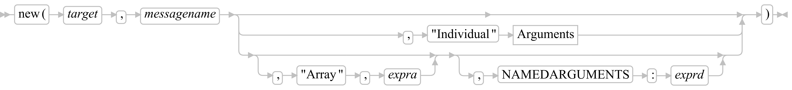
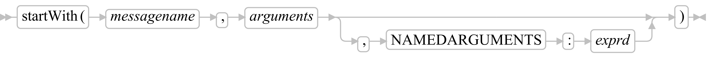
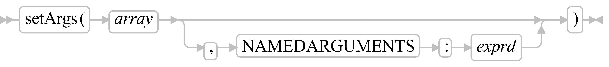

Named arguments - Specification
A positional argument list is a serie of optional expressions, separated by commas.
caller: put("one", 1)
callee: use arg item, index -- order is important
The position of each argument within the argument list identifies the corresponding parameter in the parameter list of the routine/method being invoked.
This is in contrast to named argument lists, where the correspondence between argument and parameter is done using the parameter's name.
caller: put(index:1, item:"one")
callee: use named arg item, index -- order is not important
Caller side
Positional and named arguments can be used in the same call.
Named arguments are after the last positional argument.
caller: "one two three one"~reduce("put", by:"word", initial:.set~new)
The syntax for trailing block (when last positional argument) is still available:
f(a1,a2,n1:v1,n2:v2){...}
is equivalent to
f(a1,a2,{...},n1:v1,n2:v2)
Arguments
|----+----------------------------------------------------+----|
+--| Positional arguments |--------------------------+
+-------------------------------| Named arguments |--+
+--| Positional arguments |--,--| Named arguments |--+
Positional arguments
+-,--------------+
V |
|-----+------------+-+----|
| |
+-expression-+Named arguments
+-,------------------+
V |
|-----+-name-:-expr----+-+----|
| |
+-name-:---------+
| |
+------:-varname-+
Shorthand syntax
name: -- without expr, pass .true
:varname -- without name, pass varname:varnameCalled side
use strict arg doer
use strict named arg by, initial
Named arguments
The named arguments are declared separately from the positional arguments.
use strict arg doer -- Positional arguments (not impacted by the named arguments)
use named arg by, initial=.nil -- If 'by' is not passed by the caller then the variable 'by' is dropped.
-- If 'initial' is not passed by the caller then the variable 'initial' is set to .nil.
-- The named arguments passed by the caller and not explicitely declared by the callee are not available as variables.
-- They are available in .Context~namedArgs.
use strict named arg by, initial=.nil -- 'by' is mandatory.
-- 'initial' is optional, default value is .nil.
-- Only 'by' and 'initial' are accepted.
use strict named arg by, initial=.nil, ... -- 'by' is mandatory.
-- 'initial' is optional, default value is .nil.
-- Any named argument is accepted.
-- The named arguments passed by the caller and not explicitely declared by the callee are not available as variables.
-- They are available in .Context~namedArgs.
use auto named arg -- Automatic retrieval or creation of variable for each named argument passed by the caller.
use auto named arg by, initial=.nil -- If 'by' is not passed by the caller then the variable 'by' is dropped.
-- If 'initial' is not passed by the caller then the variable 'initial' is set to .nil.
-- The named arguments passed by the caller are available as variables.
-- They are also available in .Context~namedArgs.
use strict auto named arg by, initial=.nil, ... -- 'by' is mandatory.
-- 'initial' is optional, default value is .nil.
-- Any named argument is accepted.
-- The named arguments passed by the caller are available as variables.
-- They are also available in .Context~namedArgs.
use strict auto named arg -- Error 99.900: STRICT AUTO requires the "..." argument marker at the end of the argument list
-- This error is raised during the parsing of the Rexx program.
-- Without an ellipsis, the keyword 'auto' is useless in strict mode.Message term
>>-receiver-+- ~ --+-messagename--+----------+--+---------------------+---><
+- ~~ -+ +-:-symbol-+ +-(--| Arguments |--)-+>>-receiver[--| Arguments |--]----------------------------><
Instruction ARG
ARG template_listNot impacted, no access to named arguments.
Instruction PARSE ARG
PARSE ARG template_listNot impacted, no access to named arguments.
Instruction CALL
>>-CALL----+-name-----+----| Arguments |--------------------><
+-(-expr-)-+
Function
>>-function_name(----| Arguments |----)-------------------><Instruction FORWARD
Inconsistency with Message~new and
Object~run.
Here, ARRAY is followed by a list of arguments.
There, "Array" is followed by a mandatory array.
"Individual" is followed by a list of arguments.
exprd is a directory of named arguments.
>>-FORWARD--+------------+--+---+--------------------+--+-------------------------+---+--+------------------+--+----------------+--+-------------+----><
+--CONTINUE--+ | +--ARGUMENTS--expra--+ +--NAMEDARGUMENTS--exprd--+ | +--MESSAGE--exprm--+ +--CLASS--exprs--+ +--TO--exprt--+
+--------------ARRAY----(--| Arguments |--)---------------+
Possible combinations to override arguments:
positional arguments named arguments
ARGUMENTS: overriden forwarded
NAMEDARGUMENTS: forwarded overriden
ARGUMENTS NAMEDARGUMENTS: overriden overriden
ARRAY: overriden overriden
none: forwarded forwardedInstruction USE
+-,----------------------+
V |
>>-USE--+----------+--+--------+-----NAMED-----ARG--+------name-+----------+----+--+----------+----+--><
+--STRICT--+ +--AUTO--+ | +-=--expr--+ +--,--...--+ |
+--+-------+-----------------------------------+
+--...--+
When the option NAMED is specified:
- name is a simple symbol, a stem or a compound symbol.
- Message term are not supported.
- Omitted names are not allowed.
When the option 'AUTO' is specified then a variable is retrieved or
created for each named argument passed by the caller and not explicitely
declared by the callee.
If this variable has already a value then it's not overriden.
Otherwise the value of the named argument is assigned to the
variable.
There is no evaluation of the default value 'expr' when a value has
been provided by the caller.
The order of evaluation is the order of declaration in
USE NAMED ARG (left-to-right).
The automatic variables are already created and can be used during the
evaluation of the default value.
UNKNOWN method
::method unknown
expose target -- assuming this target will receive all of the unknown messages
use arg name, arguments
use named arg namedArguments -- not passed as 3rd positional argument to avoid impacts
-- send along the message with the original args and named args
forward to (target) message (name) arguments (arguments) namedArguments (namedArguments)
Message~new
Inconsistency with the instruction FORWARD.
Here, "Array" is followed by a mandatory array.
There, ARRAY is followed by a list of arguments.
ARGUMENTS is followed by a mandatory array.
>>-new(-target-,-messagename-+-------------------------------------------------------+-)--><
+-,-"Individual"--| Arguments |-------------------------+
+--+-------------------+--+--------------------------+--+
+-,-"Array"-,-expra-+ +-,-NAMEDARGUMENTS-:-exprd-+
Message~namedArguments
Returns a directory of named arguments used to invoke the message.
Object~run
Inconsistency with the instruction FORWARD.
Here, "Array" is followed by a mandatory array.
There, ARRAY is followed by a list of arguments.
ARGUMENTS is followed by a mandatory array.
>>-run(-method-+-------------------------------------------------------+-)--><
+-,-"Individual"---| Arguments |------------------------+
+--+-------------------+--+--------------------------+--+
+-,-"Array"-,-expra-+ +-,-NAMEDARGUMENTS-:-exprd-+
Object~sendWith
>>-sendWith(-messagename-,-arguments-+--------------------------+--)---><
+-,-NAMEDARGUMENTS-:-exprd-+
Object~startWith
>>-startWith(-messagename-,-arguments-+--------------------------+-)---><
+-,-NAMEDARGUMENTS-:-exprd-+
Routine~callWith
>>-callWith(-array-+--------------------------+-)---><
+-,-NAMEDARGUMENTS-:-exprd-+
Context~namedArgs
Why not ~namedArguments ?
Because I follow the naming convention used for the method
Args.
Returns a directory of named arguments used to invoke the current
context.
There is no equivalent as built-in function.
The ARG built-in function doesn't give access to the named
arguments.
Context~setArgs
>>-setArgs(-array-+--------------------------+-)---><
+-,-NAMEDARGUMENTS-:-exprd-+
Used to transfer to a coactivity the arguments passed with
resume.
A coactivity can be suspended, and can receive a new set of arguments
after each resume.
client (thread1) coactivity (thread2)
================ ====================
<SUSPENDED>
Result = resume(<Arguments>) ------------> <ACTIVE>
<SUSPENDED> use arg ...; use named arg ...
...
call yield value
<ACTIVE> <---result--- <SUSPENDED>
...
Result = resume(<Arguments>) ------------> <ACTIVE>
use arg ...; use named arg ...
...
call yield value
<ACTIVE> <---result--- <SUSPENDED>
etc...StackFrame~namedArguments
Returns a directory of named arguments used to invoke the execution frame represented by the StackFrame instance.
Function ARG
Not impacted by named arguments.
Can't be used to retrieved named arguments.
Security manager CALL
The information directory contains:
NAMEDARGUMENTS: a directory of the function's named
arguments
Security manager METHOD
The information directory contains:
NAMEDARGUMENTS: a directory of the method's named
arguments